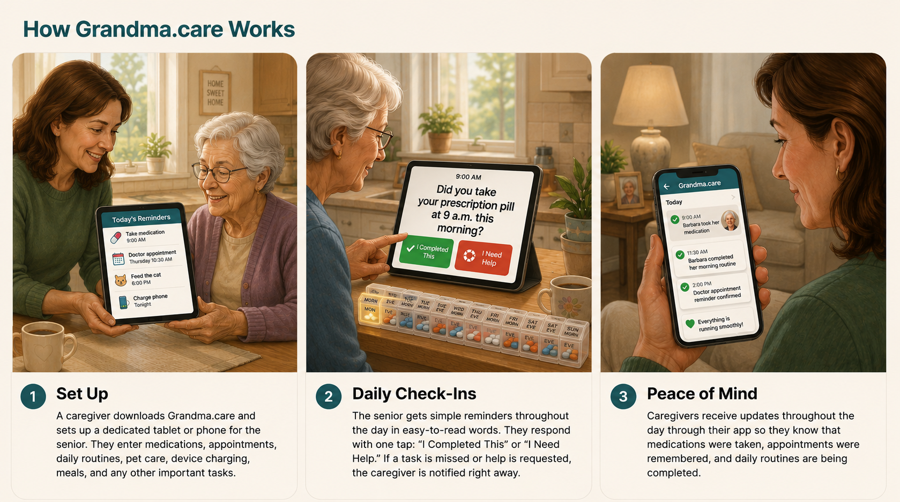

Future Vision
Future versions of Grandma.care may expand beyond standard tablets into a dedicated senior-friendly device: simple, portable, always-on, and designed specifically for care reminders, safety check-ins, and family connection at home or on the go.

The Story Behind Grandma.care
Grandma.care was inspired by Barbara, a real grandmother living independently with dementia.
Her family wanted a better way to help her stay safe, keep her routines, and remain connected without taking away her independence or moving her into a care home before it was necessary.
Grandma.care is being built for families like hers: families who love someone with memory or cognitive challenges and want to support them with dignity, safety, and peace of mind.